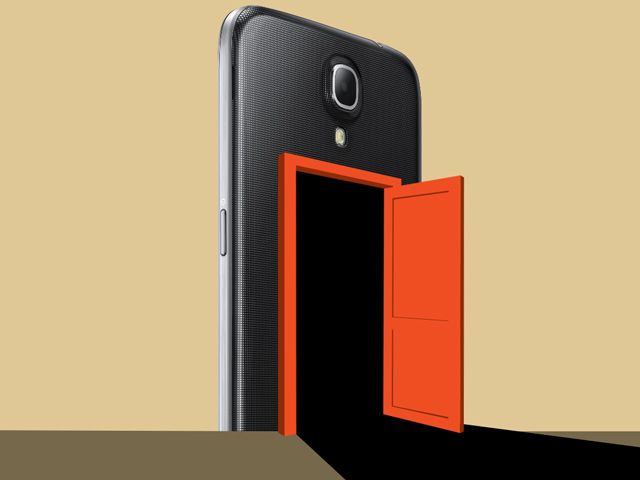

Come rimuovere adeguatamente un Backdoor

Come rimuovere Backdoor Win32/Fynloski.A?
- Premere Ctrl + Alt + Canc insieme e fermare i processi virali Win32/Fynloski.A Backdoor nel Task Manager di Windows.
Se questo non funziona, provare in un altro modo.Premere il pulsante Start e fare clic sull'opzione Esegui.Questo farà partire lo strumento Run.Digitare taskmgr e premere OK.Questo dovrebbe avviare il Task Manager di Windows.
- Vai a Opzioni cartella dal Pannello di controllo.Sotto scheda Visualizza, selezionare Visualizza cartelle e file nascosti e deselezionare Nascondi i file protetti di sistema (consigliato), quindi fare clic su OK.Ricordarsi di eseguire il backup in anticipo.
- Premere i tasti Windows + R e la ricerca di regedit in Esegui.Eliminare i file associati e le voci di registro relative a virus Win32/Fynloski.A Backdoor dal PC completamente.
- Eseguire una scansione del computer con YAC strumento di rimozione virus.3 Semplici passi per la scansione e rimuovere "Backdoor Win32/Fynloski.A" e qualsiasi altro malware, virus e spyware.
Guida e Download Yac
Home